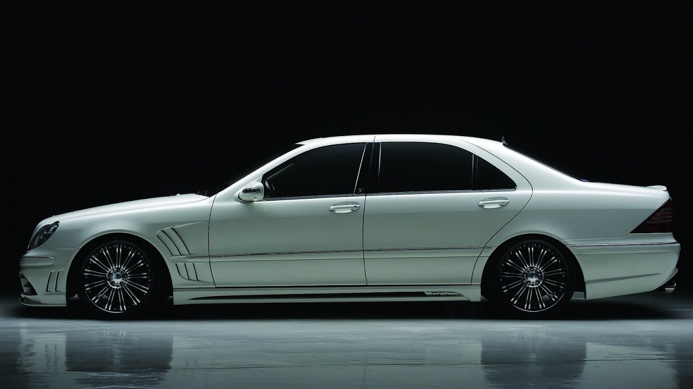

The Mercedes-Benz W220 is a range of flagship sedans which, as the fourth generation Mercedes-Benz S-Class, replaced the W140 S-Class after model year 1998 — with long and short wheelbase versions, performance and luxury options; available four-wheel drive; and a range of diesel as well as gas/petrol V6, V8, and V12 engines. Compared to its predecessor, the W220 had somewhat smaller exterior dimensions but offered greater interior volume, particularly in the long-wheelbase versions, and slightly less cargo volume.
 detaluri informacia